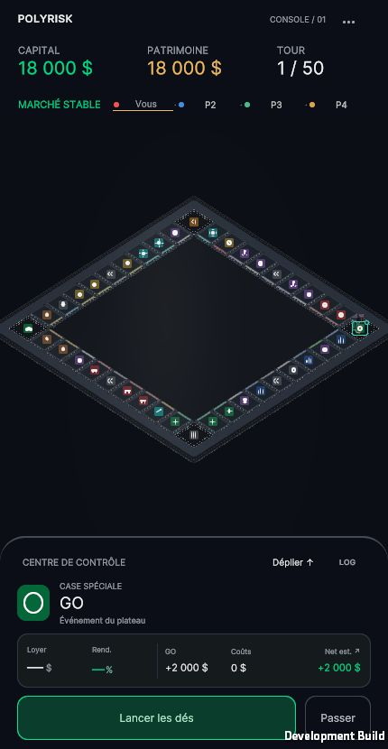
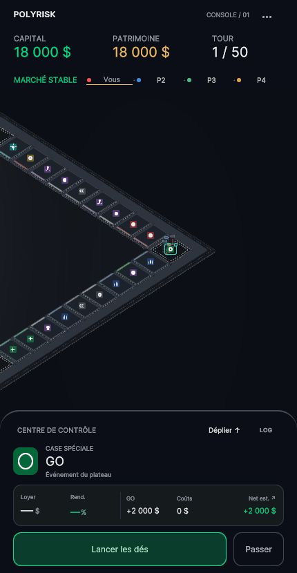
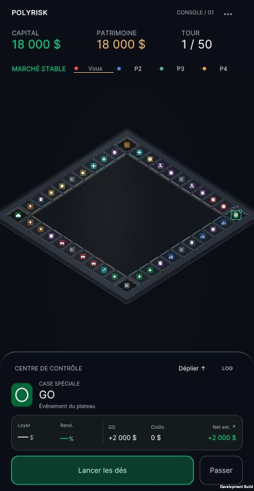
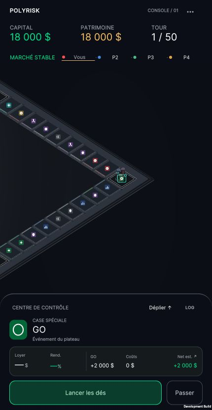
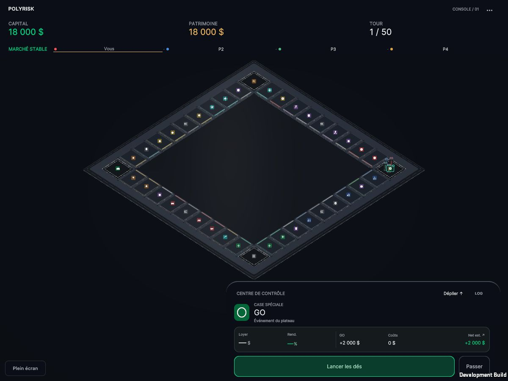
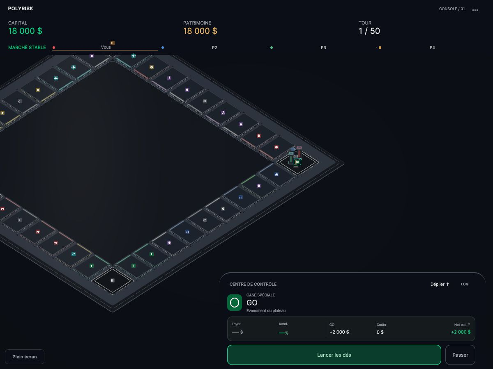
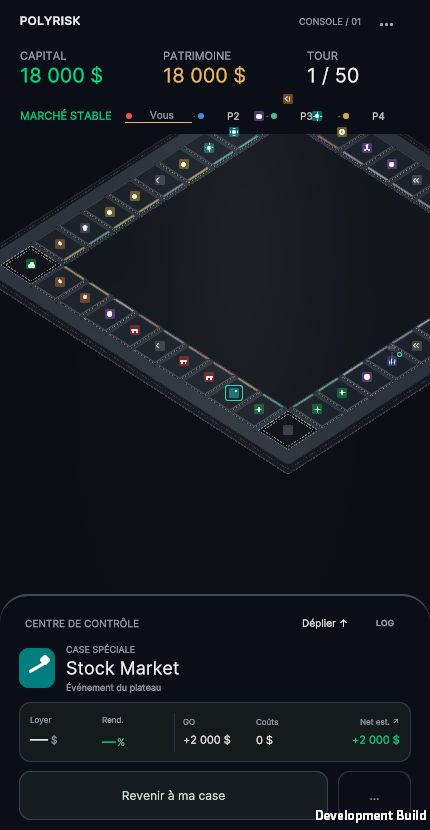
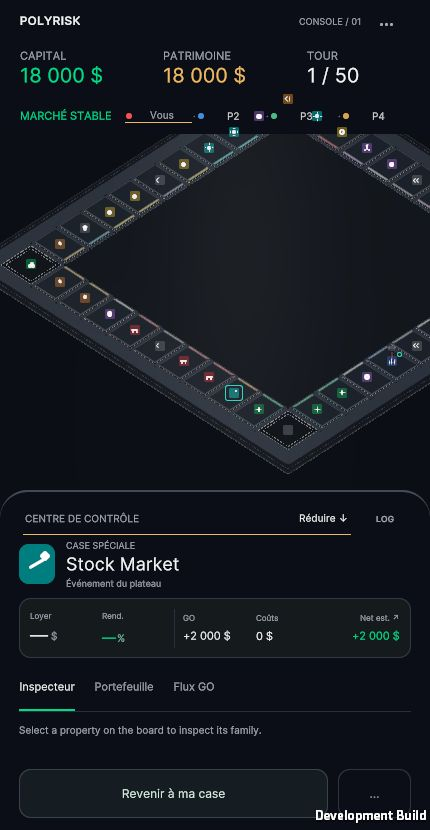
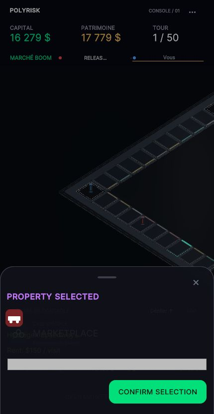
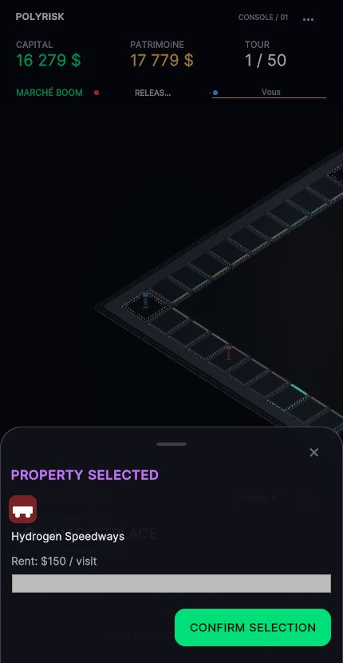

Un plateau plus proche.
Des preuves en jeu.
Build Release vérifié localement. Cette galerie s’ouvre aussi depuis son fichier HTML avec ses médias voisins. Son adresse 127.0.0.1 dépend du Mac ; elle ne constitue pas le lien de jeu public demandé.
Vidéos réelles du Release
Captures du canvas et de sa sortie audio, sans microphone. Lecture manuelle : le navigateur peut demander une interaction pour activer le son. Sources WebM conservées ; MP4 H.264/AAC pour la consultation.
Deux navigateurs sur le même Mac, serveur local : ces prises ne prouvent ni Safari iPhone, ni une partie entre appareils distants.
Portrait · mêmes dimensions
430 × 830 CSS · DPR1 réel · quatre pions à GO




Netteté · framebuffer ×2
430 × 830 CSS · 860 × 1660 forcé dans la page QA · Chromium DPR réel1, pas un iPhone




Desktop
1200 × 900 CSS · même état initial · cadrage local volontaire




Exploration et cockpit
Une sélection après glissement et un cockpit déployé. La caméra garde sa pose lors du déploiement ; l’occlusion temporaire est acceptée conformément au brief.




Correction de contraste observée
Deux couleurs de libellés Marketplace, sans changement de transaction ou de disposition.




Recette et limites
Compilation Release, 612 assertions existantes, 31 contrôles caméra Editor, 48 contrôles scène, 164 contrôles caméra runtime et 95 invariants A/B réussis. Deux WebGL ont réalisé achats et reconnexions ; les paiements et enchères ont été exercés depuis des états QA préparés, puis exécutés par le moteur et l’interface réels.
Low/B : 26,52 ms moyens sur une prise Development de6s en case7 sur Mac ; Medium/B : 30,09 ms. Ces mesures ne sont ni un budget iPhone ni une garantie de60fps. Les coefficients de finition, les détails de tests et les limites sont consignés dans le rapport.
Restent à fournir : dépôt GitHub cible et accès à un hébergement persistant. Restent à vérifier : construction du conteneur, URL publique HTTPS, partie distante et Safari iPhone physique.